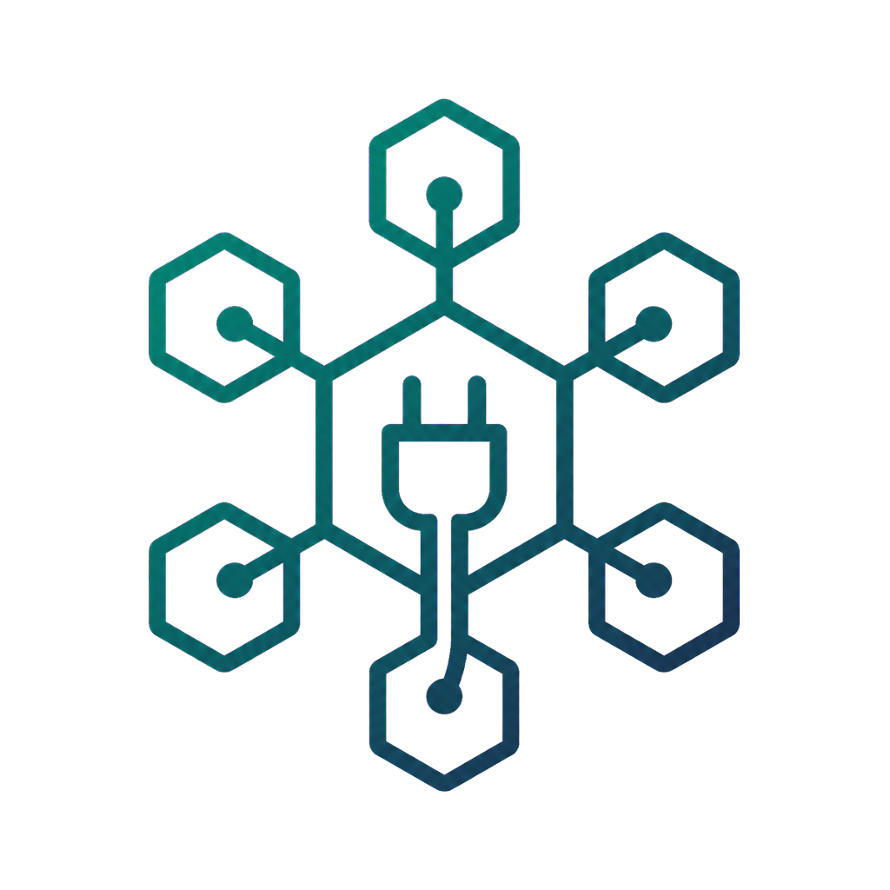

web/assets/logo.png
1024x1024
Prompt used
Use case: logo-brand. Asset type: SISP MapDrive logomark PNG, final target 1024x1024, transparent after processing. Primary request: an abstract mark for SISP MapDrive: a network drive / plug motif fused into a hexagonal cluster node, same hexagon-cluster family as AppHub, minimal and scalable to 16px. Style/medium: modern scientific-tech, calm, flat geometric vector look, single-weight ~2px line work, soft depth, high-quality polished app/brand asset. Composition/framing: centered icon, generous padding, balanced square composition, crisp edges, readable as a tiny favicon. Color palette: SISP teal #11695f to deep slate gradient, subtle teal tint, no other dominant colors. Constraints: no text, no letters, no watermark, no mockup, no paper texture. Generated on flat #ff00ff chroma-key background for alpha removal.